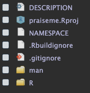
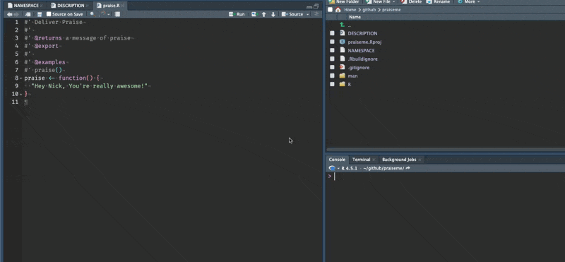
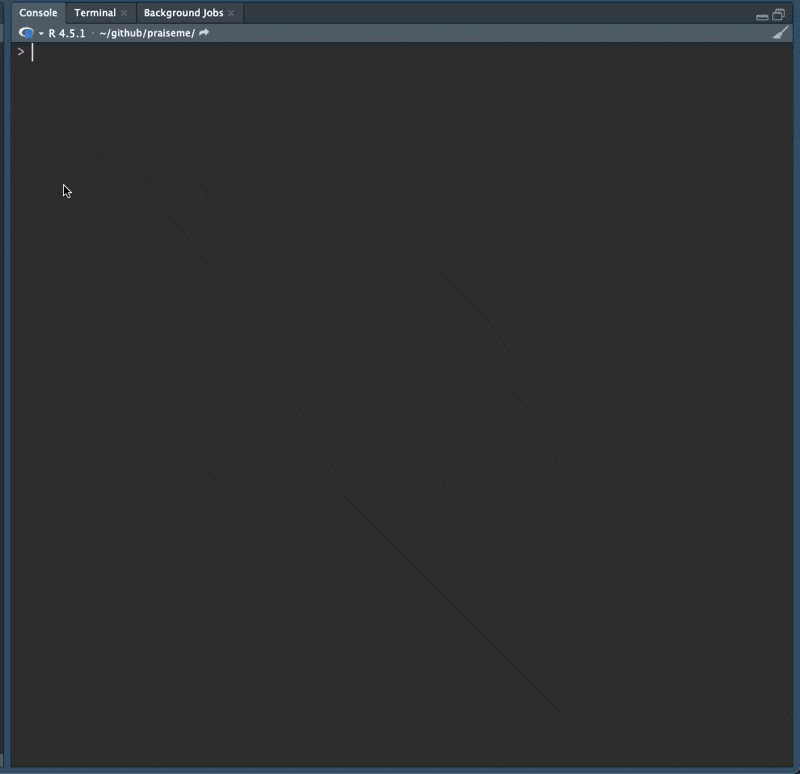

7 Using devtools::check()
So far we have written a very basic R package structure, and given it some documentation and examples. We’ve even added our new praise function to have
Now, let’s see if we can get this to pass the bar - could this go onto CRAN?
We can do this with devtools::check()
This might seem advanced, and in some ways it is - devtools::check() does a lot of things. What you need to know right now is essentially that it is running many tests to check if it is in the right standard, that it has the right files, and they are properly written.
Let’s run it!
devtools::check()
Run
devtools::check()in the consoleSee what checks we need to fix
You should see something like the following key output when you run devtools::check():
── R CMD check results ───────────────────── praiseme 0.0.0.9000 ────
Duration: 4.9s
❯ checking examples ... ERROR
Running examples in ‘praiseme-Ex.R’ failed
The error most likely occurred in:
> base::assign(".ptime", proc.time(), pos = "CheckExEnv")
> ### Name: praise
> ### Title: Deliver Praise
> ### Aliases: praise
>
> ### ** Examples
>
> praise()
Error in praise() : argument "person" is missing, with no default
Calls: praise -> paste0
Execution halted
❯ checking DESCRIPTION meta-information ... WARNING
Invalid license file pointers: LICENSE
❯ checking Rd \usage sections ... WARNING
Undocumented arguments in Rd file 'praise.Rd'
‘person’
Functions with \usage entries need to have the appropriate \alias
entries, and all their arguments documented.
The \usage entries must correspond to syntactically valid R code.
See chapter ‘Writing R documentation files’ in the ‘Writing R
Extensions’ manual.
1 error ✖ | 2 warnings ✖ | 0 notes ✔OK! There’s a bit going on, let’s discuss how to deal prioritise these messages.
7.1 How to deal with devtools::check() - errors, warnings, notes.
at the end of the devtools::check above we got this final message:
1 error ✖ | 2 warnings ✖ | 0 notes ✔7.1.1 Order of operations: ERROR before WARNING before NOTE
Generally speaking, you want to fix these in the order that they appear:
- Fix errors first, because they are larger more substantial problems
- Fix warnings second as they are less bad than errors
- Fix notes generally only when you are getting close to submit to CRAN
One caveat I would add to this is that sometimes it can feel like an easy win to fix the smallest number first. So for example if I had 10 errors and 1 warning, I might fix the warning first because that feels a little bit more achievable.
Another caveat is that as you get more experience you will understand that sometimes one problem is creating several WARNINGs or NOTEs or ERRORs.
7.1.2 Solve one thing at a time
It is worth trying your best to solve exactly one problem at a time. Work on solving that one problem first, then run check() and move on to the second one once that is solved.
The reason is that sometimes as we fix things, we can break them further.
If we are just trying to fix one thing at a time, then we can know that any changes we made are more directly tied to that new issue.
As you get more experienced, you will understand how to fix problems faster, and how to fix multiple things at the same time.
But when you are just starting out with package development, fix one thing at a time.
7.1.3 How to solve the error/warning/note
Break it into chunks. Let’s look at the first error message above:
❯ checking examples ... ERROR
Running examples in ‘praiseme-Ex.R’ failed
The error most likely occurred in:
> base::assign(".ptime", proc.time(), pos = "CheckExEnv")
> ### Name: praise
> ### Title: Deliver Praise
> ### Aliases: praise
>
> ### ** Examples
>
> praise()
Error in praise() : argument "person" is missing, with no default
Calls: praise -> paste0
Execution haltedAs you get more experienced, you will know very quickly what these kinds of errors mean. In this case, the error message has occurred under examples. I generally look for another place where there is an error message. In this case, I look at the last part:
> ### ** Examples
>
> praise()
Error in praise() : argument "person" is missing, with no defaultIn the praise() function we have the examples section, and we just call praise(). But we updated this function to take an argument. For example, praise(name = "Nick").
The error occurs because the example code, praise(), needs an argument in order to work. Fix it by adding an argument in the example code.
- Update your example code to reflect the new interface
- Run
devtools::document() - Run
devtools::check(), ensure that the error message is no longer there
You should have something like the following:
── R CMD check results ───────────────────── praiseme 0.0.0.9000 ────
Duration: 6s
❯ checking DESCRIPTION meta-information ... WARNING
Invalid license file pointers: LICENSE
❯ checking Rd \usage sections ... WARNING
Undocumented arguments in Rd file 'praise.Rd'
‘person’
Functions with \usage entries need to have the appropriate \alias
entries, and all their arguments documented.
The \usage entries must correspond to syntactically valid R code.
See chapter ‘Writing R documentation files’ in the ‘Writing R
Extensions’ manual.
0 errors ✔ | 2 warnings ✖ | 0 notes ✔7.2 Fixing warnings: undocumented arguments
Let’s focus on the warning regarding arguments, since this is a similar issue to what we were dealing with before:
❯ checking Rd \usage sections ... WARNING
Undocumented arguments in Rd file 'praise.Rd'
‘person’
Functions with \usage entries need to have the appropriate \alias
entries, and all their arguments documented.
The \usage entries must correspond to syntactically valid R code.
See chapter ‘Writing R documentation files’ in the ‘Writing R
Extensions’ manual.This warning arises because we have an argument, person, in our function, but we don’t have a corresponding piece of documentation for that argument.
We can solve this by adding
#' @param argument-name Details on the argument.So in our case, something like the following:
#' Deliver Praise
#'
#' @param person character. Name of person to deliver praise.
#'
#' @returns a message of praise
#'
#' @export
#'
#' @examples
#' praise(person = "Nick")We generally put parameters above return.
- Update documentation to add a parameter
- Run
devtools::document() - Run
devtools::check()to ensure the warning regarding arguments has gone away
7.3 Fixing warnings: LICENSE
Running check() let’s focus on the warning with the LICENSE:
❯ checking DESCRIPTION meta-information ... WARNING
Invalid license file pointers: LICENSEThis tells us something is going on with the LICENSE file. Note in the DESCRIPTION file we have the following:
Package: praiseme
Title: What the Package Does (One Line, Title Case)
Version: 0.0.0.9000
Authors@R:
person("Nicholas", "Tierney", , "nicholas.tierney@gmail.com", role = c("aut", "cre"),
comment = c(ORCID = "https://orcid.org/0000-0003-1460-8722"))
Description: What the package does (one paragraph).
License: MIT + file LICENSE
Encoding: UTF-8
Language: en-GB
Roxygen: list(markdown = TRUE)
RoxygenNote: 7.3.3And in the License field we have:
License: MIT + file LICENSEAnd when we look at the files we have in our repo, we see:

or
├── .Rbuildignore
├── .gitignore
├── DESCRIPTION
├── NAMESPACE
├── R
│ └── praise.R
├── man
│ └── praise.Rd
└── praiseme.RprojThere isn’t a LICENSE file anywhere!
It’s important to pick a license for your code so others know how they should give you attribution. A good license is the MIT license, which essentially allows people to use yoru code for free and to commercialise it, but you cannot be held liable. I am not a lawyer, however, I would recommend that you choose your own license. I’d recommend reading the chapter on licenses in the R packages book, and also consulting the TLDR legal page.
In any case, for our example, the MIT license is totally fine. We can apply this by running usethis::use_mit_license():
usethis::use_mit_license()
- Run:
usethis::use_mit_license() - Run
devtools::check()
Running usethis::use_mit_license() we see the following text:
✔ Writing LICENSE.
✔ Writing LICENSE.md.
✔ Adding "^LICENSE\\.md$" to .Rbuildignore.Which creates some files, and adds some text to .Rbuildignore.

Now, let’s see if this solved our check() problem.
devtools::check() again
- Run
devtools::check() - Has this returned all ticks?
All going well, this will have resulted in us having our package pass all checks!
You should have an output like this at the end of it:
── R CMD check results ──────────────────────────────────────────── praiseme 0.0.0.9000 ────
Duration: 5.6s
0 errors ✔ | 0 warnings ✔ | 0 notes ✔As a gif, here’s what that will look like:

Well done! You have written an R package, and essentially you could submit this to CRAN - although I wouldn’t recommend that you do, you now understand a fundamental process:
- Edit R files
- Run
devtools::load_all() - Check R files work as you expect
- If not, run steps 1-3 as needed
- If your code is working how you want, run
devtools::check()to really make sure you’ve got everything working
Now let’s discuss another important topic - how to use functions from other R packages in your package.